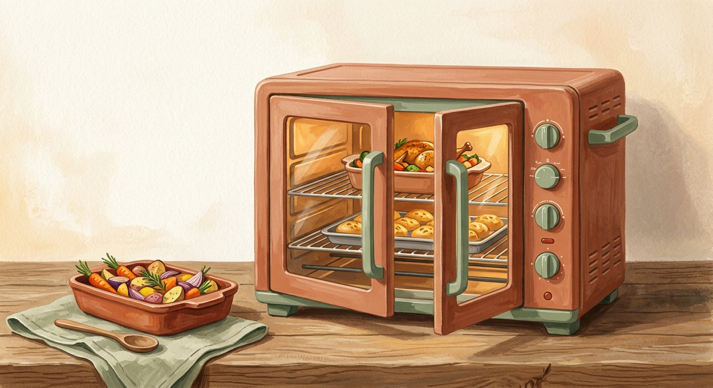

Oven-style multi-function
As an Amazon Associate I earn from qualifying purchases. How our links work
RUNNING COSTS · BUYER'S NOTEBOOK

An air fryer can cost less to run for small batches — and more for big ones. The honest answer depends on your batch sizes, your appliances’ ratings and your electricity rate. Here is the method, with nothing filled in for you.
Every running-cost comparison reduces to: wattage × time × your unit rate. All three are personal. Wattage comes from the rating plate or official listing of the exact model; time comes from your own cooking; the unit rate comes from your bill. Anyone who gives you a single number for "air fryer vs oven" has skipped at least one of them.
| Factor | Conventional oven | Air fryer (exact model) | Source / date checked |
|---|---|---|---|
| Rated wattage | rating plate / official listing | ||
| Usable cooking area | official manual | ||
| Typical batch (your kitchen) | your week, observed | ||
| Preheat needed? | official manual | ||
| Counter or storage footprint | your tape measure | ||
| Your electricity unit rate | your latest bill | ||
Multiply wattage × hours × rate for one representative week. It's a rough comparison, not a bill prediction — and the row stays blank until the official number exists.
The strongest case for a countertop appliance isn't replacing the oven — it's dequeueing it: sides that cook while the main dish roasts, or the whole holiday oven queue shortened by one. That's a scheduling benefit, and it only counts if the appliance fits, which is why we measure before the busy season — see the holiday counter math guide.
No rankings, no prices, no review scores, no "best overall" badge. Listings we link are marked sponsored and disclosed above; specifics come from the official listing pages, which are the source of truth. See what's verified and what isn't.
Official sources: Amazon Associates Operating Agreement, §5 (disclosure) · Amazon Associates Program Policies · FTC Endorsement Guides FAQ · plus the manufacturer's own listing and manual for any exact model.
← Back to the notebookFrom the shortlist · sponsored links, disclosed above


Illustrations are ours, not product photos. Check the official listing for exact specifications, price and availability.